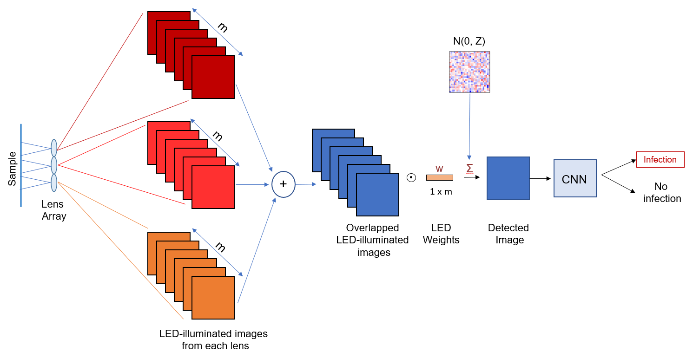

| Paper PDF |

|
This project presents an imaging system that simultaneously captures multiple images and automatically classifies their contents to increase detection throughput. Our optical design consists of a set of multiple lenses that each image a unique field-of-view onto a single image sensor. The resulting “overlapped” image exhibits reduced contrast, but includes measurements from across a proportionally larger viewing area. We then post-process this overlapped image with a deep convolutional neural network to classify the presence or absence of certain features of interest. We examine the specific case of detecting the malaria parasite within overlapped microscope images of blood smears. We demonstrate that it is possible to overlap 7 unique images onto a common sensor while still offering accurate classification of the presence or absence of the parasite, thus offering a 7x potential speed-up for automated disease diagnosis with microscope image data. Additionally, we explore the use of supervised deep-learning network to jointly optimize the physical setup of an optical microscope to improve automatic image classification accuracy in overlapped imaging. We take advantage of the wide degree of flexibility available in choosing how a sample is illuminated in a microscope to design a specific pattern of light that leads to a better performance.
|
|
|
| Paper: |
Code and Data:
|